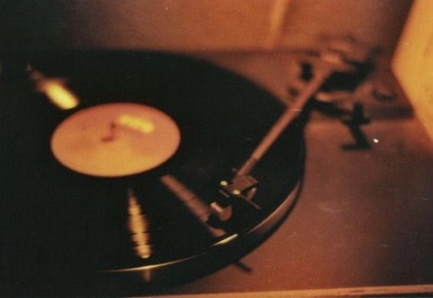

O Dia Internacional da Música

Louie Wiki |
O Dia Internacional da Música, celebrado em 1º de outubro, é uma data que transcende fronteiras e une pessoas de todas as partes do mundo através do poder universal da música. Instituído em 1975 pelo Conselho Internacional de Música, sob os auspícios da UNESCO, este dia tem como objetivo principal promover a paz, a amizade e a compreensão entre os povos, além de destacar a importância da música na vida cotidiana e na cultura global.
A música, em suas diversas formas e estilos, desempenha um papel crucial na sociedade. Ela é uma forma de arte que permite a expressão de emoções, histórias e tradições, conectando pessoas de diferentes culturas e gerações. No Dia Internacional da Música, são organizados inúmeros eventos ao redor do mundo, incluindo concertos, festivais, workshops e palestras, que visam celebrar a diversidade musical e incentivar a apreciação da música em todas as suas formas.
No Brasil, a música é uma parte intrínseca da identidade cultural. O país é conhecido por sua rica diversidade musical, que inclui gêneros como samba, bossa nova, forró, sertanejo, funk, entre outros. Cada um desses estilos musicais reflete a história e a cultura das diferentes regiões do Brasil, contribuindo para a riqueza cultural do país. Celebrar o Dia Internacional da Música no Brasil é uma oportunidade para reconhecer e valorizar essa diversidade, além de promover a educação musical e incentivar novos talentos.
A música tem o poder de transformar vidas, inspirar mudanças e criar conexões profundas entre as pessoas. No Dia Internacional da Música, somos convidados a refletir sobre o impacto da música em nossas vidas e a celebrar a beleza e a diversidade dessa forma de arte universal.